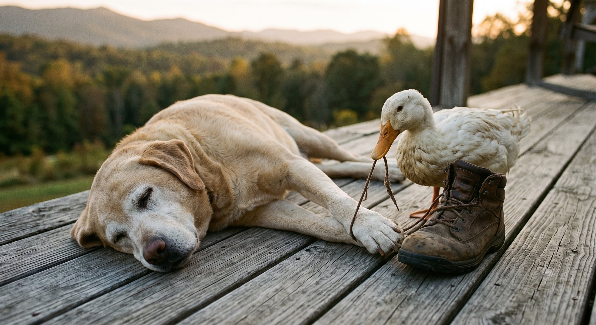

The fireworks tents went up by the highway this week. Same striped tents in the same gravel lot they take every June, somebody's kid out front in a folding chair, a hand-lettered sign leaned on a sawhorse. You could set a calendar by it.
There's a big anniversary riding on this one, a round number the whole country has been loud about. Down here it lands quieter. We'll do the Fourth the way we always do the Fourth, which when you sit with it is about the only reason any of it has lasted this long.
Drove through Lenoir on Friday and they'd started hanging the bunting downtown. Red, white and blue on the lampposts, a banner strung across the street that's been folded and hung so many years you can read the creases in it. The county runs the same things every summer, the parade and the history displays and all of it, and nobody acts like it's new. That is the point of it. It was never supposed to be new.
Sarah's got a galette going. Berries, that loose crust she folds over by hand, the same one her grandmother made and her grandmother before that, near as anybody can tell. She doesn't write it down. It lives in her hands. That is a thing that lasts too, maybe the truest kind. A recipe nobody can lose because nobody ever set it on paper to begin with.
She'll have the smoker lit before the parade, which down here is two fire trucks, a couple of horses, and every kid in the county on a bike with streamers in the spokes. It is over in about the time it takes to drink a beer. We watch all of it anyway. Her folks come up. A few cousins. People in the kitchen, the screen door going all afternoon.
Nobody at that parade is going to stand up and explain what any of it means. They will run the trucks and let the kids ride and everybody will go home and eat. A country does not get old on speeches. It gets old on this. On families that keep showing up. On a town that hangs the same creased banner every year. On a recipe handed down so many times nobody remembers whose it was. The big thing is just a whole lot of the small things that refused to quit.
We'll be out back when the town sets off whatever this year's budget covered. You can catch most of the show from the yard. Crank hates every second of it and rides it out under the porch. The duck has been into everybody's business all day, including a boot that wasn't bothering a soul.

Same as last year. Same as the year before that. That is not a small thing, the sameness. It is the whole thing, near as I can tell.
A couple hundred years and change, and the plan around here is brisket and a galette and a folding chair and a dog hiding from the fireworks. Seems about right. Seems like the point of the whole exercise, actually.